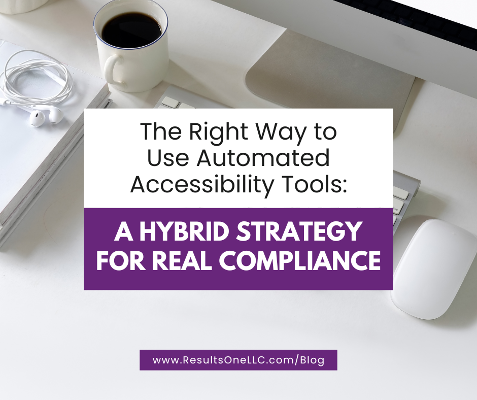

The Right Way to Use Automated Accessibility Tools: A Hybrid Strategy for Real Compliance

Automated accessibility tools promise instant insights, but the reality is more nuanced.
Automation is not a shortcut to ADA compliance or WCAG conformance. Instead, automated audits are most valuable when they are integrated into a hybrid accessibility strategy that includes manual testing and expert review.
Here’s how organizations can use automated tools in the right way.
1. Use Automated Tools as Early Warning Systems
Automated audits excel at identifying recurring issues during development or updates. They serve as a first-line checkpoint that helps teams catch problems before they scale.
Organizations should deploy automated checks:
- During design and development
- After major website changes
- Before publishing new pages
- During routine monthly or quarterly maintenance
By catching issues early, teams minimize long-term remediation costs.
2. Combine Automation With Manual Testing
This is where automated tools reach their limit. The true accessibility experience can only be assessed through:
- Manual code inspection
- Keyboard-only navigation
- Screen reader testing
- Testing with real users with disabilities
Automated tools cannot determine:
- Whether content is understandable
- Whether keyboard focus moves logically
- Whether labels and instructions make sense
- Whether dynamic components function properly
A hybrid approach—automated audits + human expertise—is the only path to defensible compliance.
3. Use Automated Tools to Monitor and Maintain Accessibility
Accessibility is not a one-time project. Automated scans provide:
- Continuous monitoring
- Alerts when new issues appear
- Insight into whether teams are adding inaccessible content
- Evidence of ongoing compliance efforts
This is especially important for:
- Large websites
- Government agencies (Title II, Section 508)
- Healthcare and financial institutions
- E-commerce sites
Automated monitoring ensures your digital properties stay accessible long after the initial remediation.
4. Use Automated Audit Data to Drive Organizational Change
Automated reports create visibility and accountability. They help:
- Demonstrate risk to leadership
- Show progress to funders and stakeholders
- Prioritize remediation work
- Bring content creators and designers into the accessibility process
Automation fuels a culture of accessibility—when used correctly.
5. Avoid Relying on Automation as a “Compliance Solution.”
Automated tools are often marketed as “simple compliance tools,” but this is misleading. They cannot:
- Produce a compliant website
- Replace manual audits
- Prevent lawsuits
- Guarantee accessibility for people with disabilities
Over-reliance on automated tools has itself become a risk, as seen in an increasing number of lawsuits citing overlays and automated “quick fixes.”
The Bottom Line
Automated accessibility audits are powerful—when used properly. They are best deployed as part of a comprehensive accessibility program that incorporates manual testing, remediation, training, and monitoring.
Organizations that adopt a hybrid approach are the ones that achieve true accessibility, reduce legal risk, and create inclusive digital experiences.